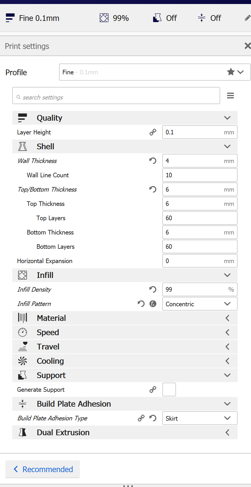

Assignment 8: Final Project
Concept / References:
For my final project, I want to create a poseable mannequin toy.
I was inspired by the work of Rob Ives and have decided to try to adapt his concept (without using any of his source files). Here's a blog post where he details some of his work that gave me the inspiration!
Here are some of his iterations:
Here's my initial concept sketch:

Process
I started by creating the body parts in Illustrator, since I found have found Illustrator to be the easiest place to make more organic shapes.
I created all the different components that I would need to laser cut (using some of Rob Ives' work for reference) and aligned them all to fit on a 12"x12" plywood sheet (1/8" thick).
I used the Epilog laser cutter at the Mill to cut all the different components.
I used the recommended settings of: Speed = 10%, Power = 100%, Frequency = 50%. Those settings were perfect!
One thing I forgot to account for: the size of the holes of the grate in the laser cutting bed. I had some pieces fall right through so I had to cut a few different versions to make sure I had a complete set of parts.


Next, it was time to 3D print the ball joints!
I designed them in Rhino using Grasshopper, so I would be able to easily adjust the inner cylinder diameter to work with the dowels - and easily adjust the outer sphere size to give the right amount of friction with the laser-cut parts.
After a bit of experimentation and test prints to figure out the best settings, I used the following settings on the 3D printer. Note: 99% concentric infill.
The nice thing about these parts was they were so small they only took 10-15 mins to print.

I needed to get the actual ball joint dimensions correct, so I ran through a few versions of adjustments to get everything at the dimensions I wanted.
Final dimensions: inner cylinder radius = 1.75mm, outer sphere diameter = 8.35mm
Once I had all the dimensions worked out, I needed to 3D print 16 ball joints. I tried printing them all at once but got spaghetti :(
Oops! I ended up printing them one at a time.
Once they were all 3D printed, I needed to start gluing pieces together. I started by gluing each body part together (except for the top layer). I used clamps to make sure things were given the right amount of pressue as the glue dried.
Then, I glued dowels into all of the ball joints. Next, I started putting the ball joints into the sockets and gluing the top layer on to hold them in place. I used clamps again here to get the right amount of pressure while the glue dried.
Then I laid out the skeleton.
Next, I started the process of cutting all the dowels and gluing them into the right slots with superglue.
Slowly but surely, the man started coming together.
]
And then he was all done! Ready to be posed!
Techniques Used:
Laser Cutting
Parametric CAD
3D Printing
Moving Parts
Stock Parts
Bill of Materials:
(12) 3mm wooden dowels (Amazon)
(2) 3mm [1/8"] 12"x12" plywood sheets (Amazon)
Wood glue (Lowe's)
Gorilla glue (Lowe's)
Assorted clamps (Lowe's)
PLA filament for 3D printing (Amazon)
Source Files:
Here's a link to the source files.